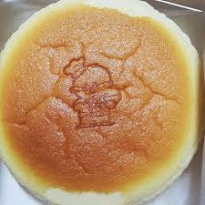

{kind=link}
Japanese Cheesecake
After wanting to try a Japanese cheesecake for years, but having no way to buy one in my area, I decided I would make my own. There was no need to be daydreaming about how it would taste when I could make it myself, from scratch! This dessert will blow you away and might easily become one of the best you’ve ever tried. So, if you’re interested in how to make it, scroll down to see our quick and easy recipe for the Japanese cheesecake!
Japanese Cheesecake
Prep Time
Cook Time
Yield
20 mins
70 mins
6-8 people
Ingredients for 6-8 servings
- 1/2 cup cream cheese
- 1/3 cup milk
- 2 1/2 tablespoons unsalted butter
- 1/4 cup all-purpose flour
- 2 egg yolks
- 2 1/2 egg whites
- 3 1/4 tablespoons sugar

Directions
- Separate the eggs: Separate 2 egg yolks into a bowl and 2 1/2 egg whites into a mixer bowl.
- Melt and mix the base ingredients: In a pot over low heat, combine the butter, cream cheese, and sugar. Stir until smooth.
- Incorporate egg yolks: Remove from heat and mix the egg yolks into the batter until fully combined.
- Add dry ingredients: Sift in the flour and mix until smooth.
- Mix in milk: Slowly pour in the milk, stirring continuously.
- Beat egg whites: Beat the egg whites in a mixer until stiff peaks form.
- Preheat oven: Preheat the oven to 330°F and prepare a bain-marie.
- Fold egg whites into batter: Gently fold one-third of the egg whites into the batter. Repeat until fully incorporated.
- Prepare baking pans: Line the bottom of a pan with parchment paper and pour in the batter.
- Bake: Place the pan in the bain-marie and bake at 330°F for 25 minutes. Reduce temperature to 250°F and bake for 45 minutes.
- Cool: Let the cake cool in the oven for 10 minutes.
- Invert and remove: Carefully flip the cake out of the pan and remove the parchment paper.
- Serve: Serve warm and enjoy the bounciness. You can also chill the cake for a firmer texture.